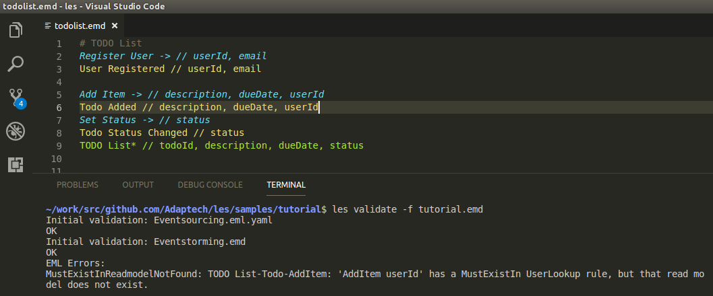
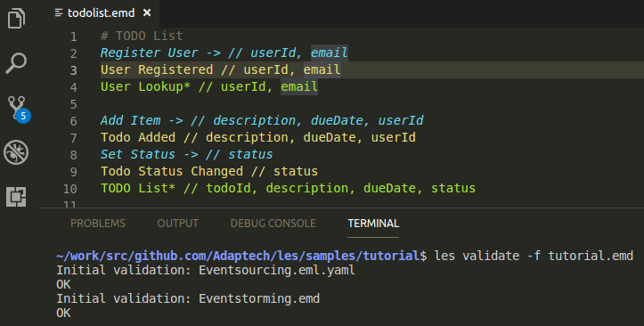

7. Iterate
Deleting the previous iteration, including data
Delete the entire system with …
cd api
docker-compose downRetaining data from the previous iteration
To retain the event store data, delete just the API docker container but leave the eventstore running:
cd api
docker-compose stop api && docker-compose rm -fEdit the EMD (or EML)
les validate -f runs continuously, re-validating the EMD/EML each time Eventstorming.emd is saved:

This version makes sure that the “Add Item” userId parameter actually belongs to a registered user. But there is a validation error - for that to be possible, a read model must exist where users can be looked up by userId when somebody POSTs to /api/v1/Todo/AddItem. Let’s add one:
# TODO List
Register User -> // userId, email
User Registered // userId, email
User Lookup* // userId, email
Add Item -> // description, dueDate, userId
Todo Added // description, dueDate, userId
Set Status -> // status
Todo Status Changed // status
TODO List* // todoId, description, dueDate, statusIf a command refers to another event stream by ID (e.g. userId in Add Item) it assumes that there is a read model with the name "<streamname> Lookup".
Example: "User Lookup* // userId, email". This is queried by the API controller to ensure that a given (e.g.) userId command parameter refers to an existing user.
Validation now passes:

Rebuild and deploy
les convert todolist.emd && \
les-node -b Eventsourcing.eml.yaml && \
cd api && \
npm install && \
docker-compose up -d && \
docker-compose restart api # The restart is a workaround for a race condition when starting containers. :-(Try it:
curl -X POST "http://localhost:3001/api/v1/Todo/AddItem" -H "accept: */*" -H "Content-Type: application/json" -d "{\"description\":\"Serpentlake\",\"dueDate\":\"Tuesday 3 May 2018\",\"todoId\":\"241dfb5c5e3243ea802e62a4ef000a5a\",\"userId\":\"48b0ef227d204fdc971def3deeb9ef4e\"}"… results in:
{"message":[{"field":"userId","msg":"userId does not exist."}]}
Therefore, register the user:
curl -X POST "http://localhost:3001/api/v1/User/RegisterUser" -H "accept: */*" -H "Content-Type: application/json" -d "{\"email\":\"natalieharris066@test.com\",\"userId\":\"48b0ef227d204fdc971def3deeb9ef4e\"}"… and try adding a TODO item for that userId again:
curl -X POST "http://localhost:3001/api/v1/Todo/AddItem" -H "accept: */*" -H "Content-Type: application/json" -d "{\"description\":\"Serpentlake\",\"dueDate\":\"Tuesday 3 May 2018\",\"todoId\":\"241dfb5c5e3243ea802e62a4ef000a5a\",\"userId\":\"48b0ef227d204fdc971def3deeb9ef4e\"}"The item can now be found in the TODO list read model:
curl -X GET "http://localhost:3001/api/v1/r/TODOList" -H "accept: */*"returns …
[{"todoId":"241dfb5c5e3243ea802e62a4ef000a5a","description":"Serpentlake","dueDate":"Tuesday 3 May 2018","status":"","userId":"48b0ef227d204fdc971def3deeb9ef4e"}]… because now a user with userId 48b0ef227d204fdc971def3deeb9ef4e exists:
curl -X GET "http://localhost:3001/api/v1/r/UserLookup" -H "accept: */*"returns …
[{"userId":"48b0ef227d204fdc971def3deeb9ef4e","email":"natalieharris066@test.com"}]